Geometrical¶
CalcpadCE bundles a worksheet for every cross-section that turns up in structural analysis — from primitive shapes to the full catalogue of rolled and built-up steel profiles.
Each page returns the same set of section properties: area, centroid, second moments of area, section moduli and radii of gyration, all expressed symbolically so the formulas remain readable. The collection covers the basics (rectangle, circle, trapezoid, equilateral and right triangles, hexagon), the rolled steel family (Tee, Double Tee, angle, channel, Zed), thin-walled pipes (circular, elliptical, rectangular tube), and partial-circle shapes (half, quarter, sector, segment). For irregular outlines the arbitrary polygon worksheet integrates the same properties from a list of vertex coordinates, while the solution of a triangle page provides the trigonometric companion that recovers all six elements from three given ones.
Solution of a Triangle¶
Recovers all six elements of a triangle from three given side lengths via the law of cosines, plus area and the three heights.
"Solution of triangle, defined by three sides
#deg
'Lengths of sides:
a = ? {5}', 'b = ? {4}', 'c = ? {6}
#hide
#if (a + b > c)*(b + c > a)*(c + a > b)
#post
'Perimeter
P = a + b + c
'Half-perimeter -'p = 0.5*P
'Area (Heron′s formula):
A = sqr(p*(p - a)*(p - b)*(p - c))
'Radius of inscribed circle:
r = A/p
'Radius of escribed circle:
R = a*b*c/(4*A)
'Angles (Law of cosines):
α = acos((b^2 + c^2 - a^2)/(2*b*c))'°
β = acos((c^2 + a^2 - b^2)/(2*c*a))'°
γ = acos((a^2 + b^2 - c^2)/(2*a*b))'°
#if (α ≡ 90) + (β ≡ 90) + (γ ≡ 90)
'<p>Type of triangle: right,
#else if (α > 90) + (β > 90) + (γ > 90)
'<p>Type of triangle: obtuse,
#else
'<p>Type of triangle: acute,
#end if
#if (a ≡ b)*(a ≡ c)
'<!-- -->equilateral.</p>
#else if (a ≡ b) + (a ≡ c) + (b ≡ c)
'<!-- -->isosceles.</p>
#else
'<!-- -->scalene.</p>
#end if
#pre
'<svg viewbox="-20 -20 440 232" xmlns="http://www.w3.org/2000/svg" version="1.1" style="font-size: 20px; width: 220pt; height: 116pt">
'<path d="M40 192 A 40 40 0 0 0 32 168" style="stroke:goldenrod; stroke-width:1; fill: none"/>
'<path d="M360 192 A 40 40 0 0 1 376 160" style="stroke:goldenrod; stroke-width:1; fill: none"/>
'<path d="M280 32 A 40 40 0 0 1 224 24" style="stroke:goldenrod; stroke-width:1; fill: none"/>
'<polyline points="0,192 400,192 256,0 0,192" style="stroke:black; stroke-width:2; fill:yellow; fill-opacity:0.2"/>
'<circle cx="0" cy="192" r="4" style="fill:red"/>
'<circle cx="400" cy="192" r="4" style="fill:red"/>
'<circle cx="256" cy="0" r="4" style="fill:red"/>
'<text x="0" y="212" text-anchor="end">A</text>
'<text x="400" y="212">B</text>
'<text x="256" y="-5">C</text>
'<text x="200" y="212" text-anchor="middle">c</text>
'<text x="328" y="86" text-anchor="start">a</text>
'<text x="128" y="86" text-anchor="end">b</text>
'<text x="50" y="182">α</text>
'<text x="350" y="182" text-anchor="end">β</text>
'<text x="256" y="60" text-anchor="middle">γ</text>
'</svg>
#hide
h_c = a*sin(β)
c_1 = b*cos(α)
x_min = min(0; c_1)
x_max = max(c; c_1)
dx = x_max - x_min
k = 400/max(dx; h_c)
w = dx*k
h = h_c*k
x_A = 0
y_A = h
x_B = x_A + c*k
y_B = y_A
x_C = x_A + c_1*k
y_C = y_A - h_c*k
#post
#val
'<svg viewbox="'x_min*k - 20' -20 'w + 40' 'h + 40'" xmlns="http://www.w3.org/2000/svg" version="1.1" style="font-size: 18px; width: 'w/2 + 20'pt; height: 'h/2 + 20'pt">
'<path d="M'x_A + 40' 'y_A' A 40 40 0 0 0 'x_A + 40*cos(α)' 'y_A - 40*sin(α)'" style="stroke:goldenrod; stroke-width:1; fill: none"/>
'<path d="M'x_B - 40' 'y_A' A 40 40 0 0 1 'x_B - 40*cos(β)' 'y_B - 40*sin(β)'" style="stroke:goldenrod; stroke-width:1; fill: none"/>
'<path d="M'x_C + 40*cos(β)' 'y_C + 40*sin(β)' A 40 40 0 0 1 'x_C - 40*cos(α)' 'y_C + 40*sin(α)'" style="stroke:goldenrod; stroke-width:1; fill: none"/>
'<polyline points="'x_A','y_A' 'x_B','y_B' 'x_C','y_C' 'x_A','y_A'" style="stroke:black; stroke-width:2; fill:yellow; fill-opacity:0.2"/>
'<circle cx="'x_A'" cy="'y_A'" r="4" style="fill:red"/>
'<circle cx="'x_B'" cy="'y_B'" r="4" style="fill:red"/>
'<circle cx="'x_C'" cy="'y_C'" r="4" style="fill:red"/>
'<text x="'x_A'" y="'y_A + 20'" text-anchor="end">A</text>
'<text x="'x_B'" y="'y_B + 20'">B</text>
'<text x="'x_C'" y="'y_C - 5'">C</text>
'<text x="'(x_A + x_B)/2'" y="'y_A + 20'" text-anchor="middle">'c'</text>
'<text x="'(x_B + x_C)/2 + 5'" y="'(y_B + y_C)/2 - 10'" text-anchor="start">'a'</text>
'<text x="'(x_C + x_A)/2 - 5'" y="'(y_B + y_C)/2 - 10'" text-anchor="end">'b'</text>
'<text x="'x_A + 50'" y="'y_A - 10'">'α'°</text>
'<text x="'x_B - 50'" y="'y_B - 10'" text-anchor="end">'β'°</text>
'<text x="'x_C'" y="'y_C + 60'" text-anchor="middle">'γ'°</text>
'</svg>
#equ
'Medians:
m_a = sqrt((b^2 + c^2 - 0.5*a^2)/2)
m_b = sqrt((a^2 + c^2 - 0.5*b^2)/2)
m_c = sqrt((a^2 + b^2 - 0.5*c^2)/2)
#hide
x_mA = (x_B + x_C)/2
y_mA = (y_B + y_C)/2
x_mB = (x_A + x_C)/2
y_mB = (y_A + y_C)/2
x_mC = (x_A + x_B)/2
y_mC = (y_A + y_B)/2
x_ma = (2*x_A + x_mA)/3 - 20
y_ma = (2*y_A + y_mA)/3 - 10
x_mb = (2*x_B + x_mB)/3 + 5
y_mb = (2*y_B + y_mB)/3 - 5
x_mc = (2*x_C + x_mC)/3 + 5
y_mc = (2*y_C + y_mC)/3 - 10
x_M = (x_C + 2*x_mC)/3
y_M = (y_C + 2*y_mC)/3
#post
#val
'<svg viewbox="'x_min*k - 20' -20 'w + 40' 'h + 40'" xmlns="http://www.w3.org/2000/svg" version="1.1" style="font-size: 18px; width: 'w/2 + 20'pt; height: 'h/2 + 20'pt">
'<line x1="'x_A'" y1="'y_A'" x2="'x_mA'" y2="'y_mA'" style="stroke:orange; stroke-width:1"/>
'<line x1="'x_B'" y1="'y_B'" x2="'x_mB'" y2="'y_mB'" style="stroke:orange; stroke-width:1"/>
'<line x1="'x_C'" y1="'y_C'" x2="'x_mC'" y2="'y_mC'" style="stroke:orange; stroke-width:1"/>
'<polyline points="'x_A','y_A' 'x_B','y_B' 'x_C','y_C' 'x_A','y_A'" style="stroke:black; stroke-width:2; fill:yellow; fill-opacity:0.2"/>
'<circle cx="'x_A'" cy="'y_A'" r="4" style="fill:red"/>
'<circle cx="'x_B'" cy="'y_B'" r="4" style="fill:red"/>
'<circle cx="'x_C'" cy="'y_C'" r="4" style="fill:red"/>
'<circle cx="'x_M'" cy="'y_M'" r="4" style="fill:red"/>
'<text x="'x_A'" y="'y_A + 20'" text-anchor="end">A</text>
'<text x="'x_B'" y="'y_B + 20'">B</text>
'<text x="'x_C'" y="'y_C - 5'">C</text>
'<text x="'x_ma'" y="'y_ma'" font-style="italic">m</text>
'<text x="'x_mb'" y="'y_mb'" font-style="italic">m</text>
'<text x="'x_mc'" y="'y_mc'" font-style="italic">m</text>
'<text x="'x_ma + 15'" y="'y_ma + 6'">a</text>
'<text x="'x_mb + 15'" y="'y_mb + 6'">b</text>
'<text x="'x_mc + 15'" y="'y_mc + 6'">c</text>
'</svg>
#equ
'Angle bisectors:
l_a = sqrt(b*c*(1 - a^2/(b + c)^2))
l_b = sqrt(a*c*(1 - b^2/(a + c)^2))
l_c = sqrt(a*b*(1 - c^2/(a + b)^2))
#hide
x_o = c/2
y_o = sqr(R^2 - c^2/4)*sign(90 - γ)
y_min = y_o - R
y_max = y_o + R
dx = 2*R
dy = dx
k = 400/dx
w = dx*k
h = dy*k
x_A = (R - x_o)*k
y_A = (R + y_o)*k
x_B = x_A + c*k
y_B = y_A
x_C = x_A + c_1*k
y_C = y_A - h_c*k
x_lA = (x_B*b + x_C*c)/(b + c)
y_lA = (y_B*b + y_C*c)/(b + c)
x_lB = (x_A*a + x_C*c)/(a + c)
y_lB = (y_A*a + y_C*c)/(a + c)
x_lC = (x_A*a + x_B*b)/(a + b)
y_lC = (y_A*a + y_B*b)/(a + b)
x_la = (2*x_A + x_lA)/3 - 20
y_la = (2*y_A + y_lA)/3 - 10
x_lb = (2*x_B + x_lB)/3 + 5
y_lb = (2*y_B + y_lB)/3 - 5
x_lc = (2*x_C + x_lC)/3 + 5
y_lc = (2*y_C + y_lC)/3 - 10
x_L = x_A + (b + c - a)/2*k
y_L = y_A - r*k
x_O = x_A + x_o*k
y_O = y_A - y_o*k
#post
#val
'<svg viewbox="'x_min*k - 20' -20 'w + 40' 'h + 40'" xmlns="http://www.w3.org/2000/svg" version="1.1" style="font-size: 18px; width: 'w/2 + 20'pt; height: 'h/2 + 20'pt">
'<circle cx="'x_O'" cy="'y_O'" r="'R*k'" style="stroke:red; fill:none "/>
'<circle cx="'x_L'" cy="'y_L'" r="'r*k'" style="stroke:green; fill:palegreen; fill-opacity:0.4"/>
'<path d="M'x_A + 40' 'y_A' A 40 40 0 0 0 'x_A + 40*cos(α)' 'y_A - 40*sin(α)'" style="stroke:goldenrod; stroke-width:1; fill: none"/>
'<path d="M'x_B - 40' 'y_A' A 40 40 0 0 1 'x_B - 40*cos(β)' 'y_B - 40*sin(β)'" style="stroke:goldenrod; stroke-width:1; fill: none"/>
'<path d="M'x_C + 40*cos(β)' 'y_C + 40*sin(β)' A 40 40 0 0 1 'x_C - 40*cos(α)' 'y_C + 40*sin(α)'" style="stroke:goldenrod; stroke-width:1; fill: none"/>
'<line x1="'x_A'" y1="'y_A'" x2="'x_lA'" y2="'y_lA'" style="stroke:green; stroke-width:1"/>
'<line x1="'x_B'" y1="'y_B'" x2="'x_lB'" y2="'y_lB'" style="stroke:green; stroke-width:1"/>
'<line x1="'x_C'" y1="'y_C'" x2="'x_lC'" y2="'y_lC'" style="stroke:green; stroke-width:1"/>
'<polyline points="'x_A','y_A' 'x_B','y_B' 'x_C','y_C' 'x_A','y_A'" style="stroke:black; stroke-width:2; fill:yellow; fill-opacity:0.2"/>
'<circle cx="'x_A'" cy="'y_A'" r="4" style="fill:red"/>
'<circle cx="'x_B'" cy="'y_B'" r="4" style="fill:red"/>
'<circle cx="'x_C'" cy="'y_C'" r="4" style="fill:red"/>
'<circle cx="'x_L'" cy="'y_L'" r="4" style="fill:red"/>
'<circle cx="'x_O'" cy="'y_O'" r="4" style="fill:red"/>
'<text x="'x_A'" y="'y_A + 20'" text-anchor="end">A</text>
'<text x="'x_B'" y="'y_B + 20'">B</text>
'<text x="'x_C'" y="'y_C - 5'">C</text>
'<text x="'x_O'" y="'y_O - 5'">O</text>
'<text x="'x_la'" y="'y_la'" font-style="italic">l</text>
'<text x="'x_lb'" y="'y_lb'" font-style="italic">l</text>
'<text x="'x_lc'" y="'y_lc'" font-style="italic">l</text>
'<text x="'x_la + 6'" y="'y_la + 6'">a</text>
'<text x="'x_lb + 6'" y="'y_lb + 6'">b</text>
'<text x="'x_lc + 6'" y="'y_lc + 6'">c</text>
'</svg>
#equ
'Altitudes:
h_a = b*sin(γ)
h_b = c*sin(α)
h_c = a*sin(β)
#hide
y_h = c_1*cot(β)
y_min = min(0; y_h)
y_max = max(h_c; y_h)
dy = y_max - y_min
k = 400/max(dx; dy)
w = dx*k
h = dy*k
x_A = 0
y_A = h
x_B = x_A + c*k
y_B = y_A
x_C = x_A + c_1*k
y_C = y_A - h_c*k
y_H = y_A - y_h*k
x_ha = x_A + h_a*k*sin(β)/2 - 20
y_ha = y_A - h_a*k*cos(β)/2 - 10
x_hb = x_B - h_b*k*sin(α)/2 + 5
y_hb = y_B - h_b*k*cos(α)/2 - 5
x_hc = x_C + 5
y_hc = y_C + h_c*k/2 - 10
#post
#val
'<svg viewbox="'x_min*k - 20' '-y_min*k - 20' 'w + 40' 'h + 40'" xmlns="http://www.w3.org/2000/svg" version="1.1" style="font-size: 18px; width: 'w/2 + 20'pt; height: 'h/2 + 20'pt">
'<line x1="'x_C'" y1="'y_H'" x2="'x_A + h_a*k*sin(β)'" y2="'y_A - h_a*k*cos(β)'" style="stroke:red; stroke-width:1; stroke-dasharray: 5,5; stroke-opacity:0.4"/>
'<line x1="'x_C'" y1="'y_H'" x2="'x_B - h_b*k*sin(α)'" y2="'y_B - h_b*k*cos(α)'" style="stroke:red; stroke-width:1; stroke-dasharray: 5,5; stroke-opacity:0.4"/>
'<line x1="'x_C'" y1="'y_H'" x2="'x_C'" y2="'y_A'" style="stroke:red; stroke-width:1; stroke-dasharray: 5,5; stroke-opacity:0.4"/>
'<line x1="'x_A'" y1="'y_A'" x2="'x_A + h_a*k*sin(β)'" y2="'y_A - h_a*k*cos(β)'" style="stroke:red; stroke-width:1"/>
'<line x1="'x_B'" y1="'y_B'" x2="'x_B - h_b*k*sin(α)'" y2="'y_B - h_b*k*cos(α)'" style="stroke:red; stroke-width:1"/>
'<line x1="'x_C'" y1="'y_A'" x2="'x_C'" y2="'y_C'" style="stroke:red; stroke-width:1"/>
'<line x1="'x_B'" y1="'y_B'" x2="'x_A + h_a*k*sin(β)'" y2="'y_A - h_a*k*cos(β)'" style="stroke:black; stroke-width:1; stroke-dasharray: 5,5; stroke-opacity:0.2"/>
'<line x1="'x_C'" y1="'y_C'" x2="'x_A + h_a*k*sin(β)'" y2="'y_A - h_a*k*cos(β)'" style="stroke:black; stroke-width:1; stroke-dasharray: 5,5; stroke-opacity:0.2"/>
'<line x1="'x_A'" y1="'y_A'" x2="'x_B - h_b*k*sin(α)'" y2="'y_B - h_b*k*cos(α)'" style="stroke:black; stroke-width:1; stroke-dasharray: 5,5; stroke-opacity:0.2"/>
'<line x1="'x_C'" y1="'y_C'" x2="'x_B - h_b*k*sin(α)'" y2="'y_B - h_b*k*cos(α)'" style="stroke:black; stroke-width:1; stroke-dasharray: 5,5; stroke-opacity:0.2"/>
'<line x1="'x_A'" y1="'y_A'" x2="'x_C'" y2="'y_A'" style="stroke:black; stroke-width:1; stroke-dasharray: 5,5; stroke-opacity:0.2"/>
'<line x1="'x_B'" y1="'y_B'" x2="'x_C'" y2="'y_A'" style="stroke:black; stroke-width:1; stroke-dasharray: 5,5; stroke-opacity:0.2"/>
'<polyline points="'x_A','y_A' 'x_B','y_B' 'x_C','y_C' 'x_A','y_A'" style="stroke:black; stroke-width:2; fill:yellow; fill-opacity:0.2"/>
'<circle cx="'x_A'" cy="'y_A'" r="4" style="fill:red"/>
'<circle cx="'x_B'" cy="'y_B'" r="4" style="fill:red"/>
'<circle cx="'x_C'" cy="'y_C'" r="4" style="fill:red"/>
'<circle cx="'x_C'" cy="'y_H'" r="4" style="fill:red"/>
'<text x="'x_A'" y="'y_A + 20'" text-anchor="end">A</text>
'<text x="'x_B'" y="'y_B + 20'">B</text>
'<text x="'x_C'" y="'y_C - 5'">C</text>
'<text x="'x_ha'" y="'y_ha'" font-style="italic">h</text>
'<text x="'x_hb'" y="'y_hb'" font-style="italic">h</text>
'<text x="'x_hc'" y="'y_hc'" font-style="italic">h</text>
'<text x="'x_ha + 12'" y="'y_ha + 6'">a</text>
'<text x="'x_hb + 12'" y="'y_hb + 6'">b</text>
'<text x="'x_hc + 12'" y="'y_hc + 6'">c</text>
'</svg>
#equ
#else
'The triangle is not properly defined.
'The sum of each two sides, must be greater than the length of the third side.
#end if
Lengths of sides:
a = 5 , b = 4 , c = 6
Perimeter
P = a + b + c = 5 + 4 + 6 = 15
Half-perimeter - p = 0.5 · P = 0.5 · 15 = 7.5
Area (Heron′s formula):
A = √ p · ( p − a ) · ( p − b ) · ( p − c ) = √ 7.5 · ( 7.5 − 5 ) · ( 7.5 − 4 ) · ( 7.5 − 6 ) = 9.92
Radius of inscribed circle:
r = Ap = 9.927.5 = 1.32
Radius of escribed circle:
R = a · b · c4 · A = 5 · 4 · 64 · 9.92 = 3.02
Angles (Law of cosines):
α = acos(b2 + c2 − a22 · b · c) = acos(42 + 62 − 522 · 4 · 6) = 55.77 °
β = acos(c2 + a2 − b22 · c · a) = acos(62 + 52 − 422 · 6 · 5) = 41.41 °
γ = acos(a2 + b2 − c22 · a · b) = acos(52 + 42 − 622 · 5 · 4) = 82.82 °
Type of triangle: acute, scalene.
Medians:
ma = b2 + c2 − 0.5 · a22 = 42 + 62 − 0.5 · 522 = 4.44
mb = a2 + c2 − 0.5 · b22 = 52 + 62 − 0.5 · 422 = 5.15
mc = a2 + b2 − 0.5 · c22 = 52 + 42 − 0.5 · 622 = 3.39
Angle bisectors:
la = b · c · (1 − a2 ( b + c ) 2) = 4 · 6 · (1 − 52 ( 4 + 6 ) 2) = 4.24
lb = a · c · (1 − b2 ( a + c ) 2) = 5 · 6 · (1 − 42 ( 5 + 6 ) 2) = 5.1
lc = a · b · (1 − c2 ( a + b ) 2) = 5 · 4 · (1 − 62 ( 5 + 4 ) 2) = 3.33
Altitudes:
ha = b · sin ( γ ) = 4 · sin ( 82.82 ) = 3.97
hb = c · sin ( α ) = 6 · sin ( 55.77 ) = 4.96
hc = a · sin ( β ) = 5 · sin ( 41.41 ) = 3.31
Tee Section¶
Section properties of a Tee profile: area, centroid, second moments of area \(I_x\), \(I_y\), section moduli and radii of gyration.
"Geometrical Properties of Tee Section
'<div style="max-width:120mm"><img style="height:150pt;" alt="tee.png" class="side" src="../../Images/mechanics/sections/tee.png"></div>
'Dimensions
h = ?'%u,'t_w = ?'%u
b_f = ?'%u,'t_f = ?'%u
'Area
A_w = h*t_w'%u<sup>2</sup>
A_f = (b_f - t_w)*t_f'%u<sup>2</sup>
A = A_w + A_f'%u<sup>2</sup>
'Centroid
y_c = b_f/2'%u
S_y = A_w*h/2 + A_f*(h - t_f/2)'%u<sup>3</sup>
z_c = S_y/A'%u
'Perimeter
P = 2*(h + b_f)'%u
'Second moments of area
I_y_w = A_w*(h^2/12 +(z_c - h/2)^2)'%u<sup>4</sup>
I_y_f = A_f*(t_f^2/12 + (h - z_c - t_f/2)^2)'%u<sup>4</sup>
I_y = I_y_w + I_y_f'%u<sup>4</sup>
I_z = (t_f*b_f^3 + (h - t_f)*t_w^3)/12'%u<sup>4</sup>
'Polar moment of area
I_x = I_y + I_z'%u<sup>4</sup>
'Radii of gyration
r_y = sqrt(I_y/A)'%u
r_z = sqrt(I_z/A)'%u
r_x = sqrt(I_x/A)'%u
20 2 10 5
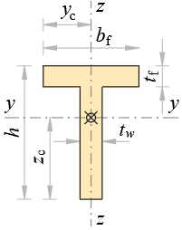
Dimensions
h = 20 m, tw = 2 m
bf = 10 m, tf = 5 m
Area
Aw = h · tw = 20 · 2 = 40 m2
Af = ( bf − tw ) · tf = ( 10 − 2 ) · 5 = 40 m2
A = Aw + Af = 40 + 40 = 80 m2
Centroid
yc = bf2 = 102 = 5 m
Sy = Aw · h2 + Af · (h − tf2) = 40 · 202 + 40 · (20 − 52) = 1100 m3
zc = SyA = 110080 = 13.75 m
Perimeter
P = 2 · ( h + bf ) = 2 · ( 20 + 10 ) = 60 m
Second moments of area
Iy_w = Aw · (h212 + (zc − h2)2) = 40 · (20212 + (13.75 − 202)2) = 1895.83 m4
Iy_f = Af · (tf212 + (h − zc − tf2)2) = 40 · (5212 + (20 − 13.75 − 52)2) = 645.83 m4
Iy = Iy_w + Iy_f = 1895.83 + 645.83 = 2541.67 m4
Iz = tf · bf3 + ( h − tf ) · tw312 = 5 · 103 + ( 20 − 5 ) · 2312 = 426.67 m4
Polar moment of area
Ix = Iy + Iz = 2541.67 + 426.67 = 2968.33 m4
Radii of gyration
ry = IyA = 2541.6780 = 5.64 m
rz = IzA = 426.6780 = 2.31 m
rx = IxA = 2968.3380 = 6.09 m
Double Tee Section¶
Section properties of a Double Tee (I-beam) profile: area, centroid, \(I_x\), \(I_y\), section moduli and radii of gyration.
"Geometrical Properties of Double Tee Section
'<div style="max-width:150mm"><img style="height:165pt;" alt="double-tee.png" class="side" src="../../Images/mechanics/sections/double-tee.png"></div>
'Dimensions
h = ?'%u,'t_w = ?'%u
b_f1 = ?'%u,'t_f1 = ?'%u
b_f2 = ?'%u,'t_f2 = ?'%u
'Area
A_w = h*t_w'%u<sup>2</sup>
A_f1 = (b_f1 - t_w)*t_f1'%u<sup>2</sup>
A_f2 = (b_f2 - t_w)*t_f2'%u<sup>2</sup>
A = A_w + A_f1 + A_f2'%u<sup>2</sup>
'Centroid
y_c = max(b_f1; b_f2)/2 '%u
S_y = A_w*h/2 + A_f1*t_f1/2 + A_f2*(h - t_f2/2)'%u<sup>3</sup>
z_c = S_y/A'%u
'Perimeter
P = 2*(h + b_f1 + b_f2 - t_w)'%u
'Second moments of area
I_y_w = A_w*(h^2/12 +(z_c - h/2)^2)'%u<sup>4</sup>
I_y_f1 = A_f1*(t_f1^2/12 + (z_c - t_f1/2)^2)'%u<sup>4</sup>
I_y_f2 = A_f2*(t_f2^2/12 + (h - z_c - t_f2/2)^2)'%u<sup>4</sup>
I_y = I_y_w + I_y_f1 + I_y_f2'%u<sup>4</sup>
I_z = (t_f1*b_f1^3 + t_f2*b_f2^3 + (h - t_f1 - t_f2)*t_w^3)/12'%u<sup>4</sup>
'Polar moment of area
I_x = I_y + I_z'%u<sup>4</sup>
'Radii of gyration
r_y = sqrt(I_y/A)'%u
r_z = sqrt(I_z/A)'%u
r_x = sqrt(I_x/A)'%u
20 1 10 2 15 3
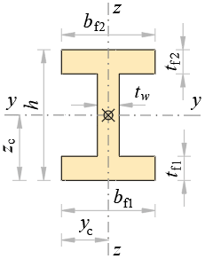
Dimensions
h = 20 m, tw = 1 m
bf1 = 10 m, tf1 = 2 m
bf2 = 15 m, tf2 = 3 m
Area
Aw = h · tw = 20 · 1 = 20 m2
Af1 = ( bf1 − tw ) · tf1 = ( 10 − 1 ) · 2 = 18 m2
Af2 = ( bf2 − tw ) · tf2 = ( 15 − 1 ) · 3 = 42 m2
A = Aw + Af1 + Af2 = 20 + 18 + 42 = 80 m2
Centroid
yc = max ( bf1; bf2 ) 2 = max ( 10; 15 ) 2 = 7.5 m
Sy = Aw · h2 + Af1 · tf12 + Af2 · (h − tf22) = 20 · 202 + 18 · 22 + 42 · (20 − 32) = 995 m3
zc = SyA = 99580 = 12.44 m
Perimeter
P = 2 · ( h + bf1 + bf2 − tw ) = 2 · ( 20 + 10 + 15 − 1 ) = 88 m
Second moments of area
Iy_w = Aw · (h212 + (zc − h2)2) = 20 · (20212 + (12.44 − 202)2) = 785.49 m4
Iy_f1 = Af1 · (tf1212 + (zc − tf12)2) = 18 · (2212 + (12.44 − 22)2) = 2360.7 m4
Iy_f2 = Af2 · (tf2212 + (h − zc − tf22)2) = 42 · (3212 + (20 − 12.44 − 32)2) = 1575.16 m4
Iy = Iy_w + Iy_f1 + Iy_f2 = 785.49 + 2360.7 + 1575.16 = 4721.35 m4
Iz = tf1 · bf13 + tf2 · bf23 + ( h − tf1 − tf2 ) · tw312 = 2 · 103 + 3 · 153 + ( 20 − 2 − 3 ) · 1312 = 1011.67 m4
Polar moment of area
Ix = Iy + Iz = 4721.35 + 1011.67 = 5733.02 m4
Radii of gyration
ry = IyA = 4721.3580 = 7.68 m
rz = IzA = 1011.6780 = 3.56 m
rx = IxA = 5733.0280 = 8.47 m
Polygon¶
Section properties of an arbitrary polygon from a list of vertex coordinates: signed area, centroid and second moments of area via the shoelace formulas.
"Geometrical properties of arbitrary polygon
'<h4>Point coordinates</h4>
x = [0; 6.3; 6; 1; 0.4; 0]
y = [0; 0; 0.6; 1; 4; 4.2]
#hide
'Calculations
A = 0
I_x = 0
I_y = 0
I_xy = 0
S_x = 0
S_y = 0
n = len(x)
#for i1 = 1 : n
i2 = if(i1 ≡ n; 1; i1 + 1)
A_i = (x.i1*y.i2 - y.i1*x.i2)/2
x_C.i = (x.i1 + x.i2)/3
y_C.i = (y.i1 + y.i2)/3
A = A + A_i
S_x = S_x + y_C.i*A_i
S_y = S_y + x_C.i*A_i
#loop
x_C = S_y/A
y_C = S_x/A
x = x - x_C
y = y - y_C
#for i = 1 : n
i1 = if(i ≡ 1; n; i - 1)
i2 = i
I_x.i = (y.i2^2 + y.i1^2)*(x.i2 - x.i1)*(y.i2 + y.i1)/12
I_y.i = (x.i2^2 + x.i1^2)*(y.i2 - y.i1)*(x.i2 + x.i1)/12
I_xy.i = (x.i1 + x.i2)*(y.i2 + y.i1)^2/24
I_xy.i = I_xy.i + (x.i2*y.i2^2 + x.i1*y.i1^2)/12
I_xy.i = (x.i2 - x.i1)*I_xy.i
I_x = I_x + I_x.i
I_y = I_y + I_y.i
I_xy = I_xy - I_xy.i
#hide
#loop
x = x + x_C
y = y + y_C
A = abs(A)
I_x = abs(I_x)
I_y = abs(I_y)
K_1 = (I_x + I_y)/2
K_2 = Sqr((I_x - I_y)^2/4 + I_xy^2)
I_1 = K_1 + K_2
I_2 = K_1 - K_2
I_o = I_1 + I_2
#if I_y ≡ I_1
α = π/2*rad
#else
α = atan(I_xy/(I_y - I_1))*rad
#end if
#show
'<h4>Geometrical properties</h4>
'Area -'A', Center point -'x_C','y_C
'Second moments of area -'I_x','I_y','I_xy
'Principal moments -'I_1', 'I_2', 'I_o
'Angle of first principal axis -'α|°
'<h4>Drawing</h4>
#hide
x0 = min(x)
y0 = min(y)
w = max(x) - x0
h = max(y) - y0
y′ = y_C - y
y_C′ = 0
y0 = min(y′)
r = sqrt(w*w + h*h)/2
c = cos(α)
s = sin(α)
x_I = x_C + [-c; c; s; -s]*r
y_I = y_C′ + [s; -s; c; -c]*r
δ = 0.1
#def axis$ = stroke:green; stroke-width:0.02; stroke-opacity:0.5; stroke-dasharray:0.2,0.1,0.05,0.1
#def section$ = stroke:black; stroke-width:0.025;
#def p$(i$) = 'x.i$','y′.i$'
#show
#val
'<svg viewbox="'x0 - 1' 'y0 - 1' 'w + 1' 'h + 1'" xmlns="http://www.w3.org/2000/svg" version="1.1" style="font-size:0.12pt; width:'80*(w + 2)'px; height:'80*(h + 2)'px;">
#for i1 = 1 : n
#hide
i2 = if(i1 ≡ n; 1; i1 + 1)
#show
'<line x1="'x.i1'" y1="'y′.i1'" x2="'x.i2'" y2="'y′.i2'" style="section$"/>
'<circle r="0.05" cx="'x.i1'" cy="'y′.i1'" fill="red" />
'<text x="'x.i1 + δ'" y="'y′.i1 - δ'">'i1' ('x.i1','y.i1')</text>
#loop
'<line x1="'x_I.1'" y1="'y_I.1'" x2="'x_I.2'" y2="'y_I.2'" style="axis$"/>
'<text x="'x_I.1 + δ'" y="'y_I.1 - δ'">1</text>
'<text x="'x_I.2 + δ'" y="'y_I.2 - δ'">1</text>
'<line x1="'x_I.3'" y1="'y_I.3'" x2="'x_I.4'" y2="'y_I.4'" style="axis$"/>
'<text x="'x_I.3 + δ'" y="'y_I.3 - δ'">2</text>
'<text x="'x_I.4 + δ'" y="'y_I.4 - δ'">2</text>
'<circle r="0.05" cx="'x_C'" cy="'y_C′'" fill="red" />
'<text x="'x_C + δ'" y="'y_C′ - δ'">C ('x_C','y_C')</text>
'</svg>
#equ
⃗x = [0; 6.3; 6; 1; 0.4; 0] = [0 6.3 6 1 0.4 0]
⃗y = [0; 0; 0.6; 1; 4; 4.2] = [0 0 0.6 1 4 4.2]
Area - A = 7.23 , Center point - xC = 2.07 , yC = 0.984
Second moments of area - Ix = 7.36 , Iy = 24.47 , Ixy = -7.69
Principal moments - I1 = 27.42 , I2 = 4.41 , Io = 31.82
Angle of first principal axis - α = 3954.23°
Angle Section¶
Section properties of an angle (L) profile: area, centroid, \(I_x\), \(I_y\), principal axes and radii of gyration.
"Geometrical Properties of Angle Section
'<div style="max-width:120mm"><img style="height:150pt;" alt="angle.png" class="side" src="../../Images/mechanics/sections/angle.png"></div>
'Dimensions
h = ?'%u,'t_w = ?'%u
b_f = ?'%u,'t_f = ?'%u
'Area
A_w = h*t_w'%u<sup>2</sup>
A_f = (b_f - t_w)*t_f'%u<sup>2</sup>
A = A_w + A_f'%u<sup>2</sup>
'Centroid
S_z = A_w*t_w/2 + A_f*(b_f + t_w)/2'%u<sup>3</sup>
y_c = S_z/A'%u
S_y = A_w*h/2 + A_f*t_f/2'%u<sup>3</sup>
z_c = S_y/A'%u
'Perimeter
P = 2*(h + b_f)'%u
'Second moments of area
I_y_w = A_w*(h^2/12 + (z_c - h/2)^2)'%u<sup>4</sup>
I_y_f = A_f*(t_f^2/12 + (z_c - t_f/2)^2)'%u<sup>4</sup>
I_y = I_y_w + I_y_f'%u<sup>4</sup>
I_z_w = (h - t_f)*t_w*(t_w^2/12 + (y_c - t_w/2)^2)'%u<sup>4</sup>
I_z_f = t_f*b_f*(b_f^2/12 + (y_c - b_f/2)^2)'%u<sup>4</sup>
I_z = I_z_w + I_z_f'%u<sup>4</sup>
I_yz = A_w*(h/2 - z_c)*(t_w/2 - y_c) + A_f*(t_f/2 - z_c)*((b_f + t_w)/2 - y_c)'%u<sup>4</sup>
'Principal moments of area
I_1 = (I_y + I_z)/2 + sqrt((I_y - I_z)^2/4 + I_yz^2)'%u<sup>4</sup>
I_2 = (I_y + I_z)/2 - sqrt((I_y - I_z)^2/4 + I_yz^2)'%u<sup>4</sup>
'Angle of principal axis
α_1 = atan((I_y - I_1)/I_yz)'<sup>о</sup>
'Polar moment of area
I_x = I_1 + I_2'%u<sup>4</sup>
'Radii of gyration
r_y = sqrt(I_y/A)'%u
r_z = sqrt(I_z/A)'%u
r_1 = sqrt(I_1/A)'%u
r_2 = sqrt(I_2/A)'%u
r_x = sqrt(I_x/A)'%u
20 2 10 5
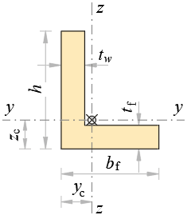
Dimensions
h = 20 m, tw = 2 m
bf = 10 m, tf = 5 m
Area
Aw = h · tw = 20 · 2 = 40 m2
Af = ( bf − tw ) · tf = ( 10 − 2 ) · 5 = 40 m2
A = Aw + Af = 40 + 40 = 80 m2
Centroid
Sz = Aw · tw2 + Af · ( bf + tw ) 2 = 40 · 22 + 40 · ( 10 + 2 ) 2 = 280 m3
yc = SzA = 28080 = 3.5 m
Sy = Aw · h2 + Af · tf2 = 40 · 202 + 40 · 52 = 500 m3
zc = SyA = 50080 = 6.25 m
Perimeter
P = 2 · ( h + bf ) = 2 · ( 20 + 10 ) = 60 m
Second moments of area
Iy_w = Aw · (h212 + (zc − h2)2) = 40 · (20212 + (6.25 − 202)2) = 1895.83 m4
Iy_f = Af · (tf212 + (zc − tf2)2) = 40 · (5212 + (6.25 − 52)2) = 645.83 m4
Iy = Iy_w + Iy_f = 1895.83 + 645.83 = 2541.67 m4
Iz_w = ( h − tf ) · tw · (tw212 + (yc − tw2)2) = ( 20 − 5 ) · 2 · (2212 + (3.5 − 22)2) = 197.5 m4
Iz_f = tf · bf · (bf212 + (yc − bf2)2) = 5 · 10 · (10212 + (3.5 − 102)2) = 529.17 m4
Iz = Iz_w + Iz_f = 197.5 + 529.17 = 726.67 m4
Iyz = Aw · (h2 − zc) · (tw2 − yc) + Af · (tf2 − zc) · (bf + tw2 − yc) = 40 · (202 − 6.25) · (22 − 3.5) + 40 · (52 − 6.25) · (10 + 22 − 3.5) = -750 m4
Principal moments of area
I1 = Iy + Iz2 + ( Iy − Iz ) 24 + Iyz2 = 2541.67 + 726.672 + ( 2541.67 − 726.67 ) 24 + ( -750 ) 2 = 2811.48 m4
I2 = Iy + Iz2 − ( Iy − Iz ) 24 + Iyz2 = 2541.67 + 726.672 − ( 2541.67 − 726.67 ) 24 + ( -750 ) 2 = 456.86 m4
Angle of principal axis
α1 = atan(Iy − I1Iyz) = atan(2541.67 − 2811.48-750) = 19.79 о
Polar moment of area
Ix = I1 + I2 = 2811.48 + 456.86 = 3268.33 m4
Radii of gyration
ry = IyA = 2541.6780 = 5.64 m
rz = IzA = 726.6780 = 3.01 m
r1 = I1A = 2811.4880 = 5.93 m
r2 = I2A = 456.8680 = 2.39 m
rx = IxA = 3268.3380 = 6.39 m
Zed Section¶
Section properties of a Zed (Z) profile: area, centroid, \(I_x\), \(I_y\), principal axes and radii of gyration.
"Geometrical Properties of Zed Section
'<div style="max-width:120mm"><img style="height:150pt;" alt="zed.png" class="side" src="../../Images/mechanics/sections/zed.png"></div>
'Dimensions
h = ?'%u,'t_w = ?'%u
b_f = ?'%u,'t_f = ?'%u
'Area
A_w = h*t_w'%u<sup>2</sup>
A_f = (b_f - t_w)*t_f'%u<sup>2</sup>
A = A_w + 2*A_f'%u<sup>2</sup>
'Centroid
y_c = b_f - t_w/2'%u
z_c = h/2'%u
'Perimeter
P = 2*(h + 2*b_f - t_w)'%u
'Second moments of area
I_y = (b_f*h^3 - (b_f - t_w)*(h - 2*t_f)^3)/12'%u<sup>4</sup>
I_z = ((h - 2*t_f)*t_w^3 + 2*t_f*b_f*(b_f^2 + 3*(b_f - t_w)^2))/12'%u<sup>4</sup>
I_yz = -b_f*(h - t_f)*A_f/2'%u<sup>4</sup>
'Principal moments of area
I_1 = (I_y + I_z)/2 + sqrt((I_y - I_z)^2/4 + I_yz^2)'%u<sup>4</sup>
I_2 = (I_y + I_z)/2 - sqrt((I_y - I_z)^2/4 + I_yz^2)'%u<sup>4</sup>
'Angle of principal axis
α_1 = atan((I_y - I_1)/I_yz)'<sup>о</sup>
'Polar moment of area
I_x=I_1+I_2'%u<sup>4</sup>
'Radii of gyration
r_y = sqr(I_y/A)'%u
r_z = sqr(I_z/A)'%u
r_x = sqr(I_x/A)'%u
20 2 10 5
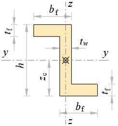
Dimensions
h = 20 m, tw = 2 m
bf = 10 m, tf = 5 m
Area
Aw = h · tw = 20 · 2 = 40 m2
Af = ( bf − tw ) · tf = ( 10 − 2 ) · 5 = 40 m2
A = Aw + 2 · Af = 40 + 2 · 40 = 120 m2
Centroid
yc = bf − tw2 = 10 − 22 = 9 m
zc = h2 = 202 = 10 m
Perimeter
P = 2 · ( h + 2 · bf − tw ) = 2 · ( 20 + 2 · 10 − 2 ) = 76 m
Second moments of area
Iy = bf · h3 − ( bf − tw ) · ( h − 2 · tf ) 312 = 10 · 203 − ( 10 − 2 ) · ( 20 − 2 · 5 ) 312 = 6000 m4
Iz = ( h − 2 · tf ) · tw3 + 2 · tf · bf · ( bf2 + 3 · ( bf − tw ) 2 ) 12 = ( 20 − 2 · 5 ) · 23 + 2 · 5 · 10 · ( 102 + 3 · ( 10 − 2 ) 2 ) 12 = 2440 m4
Iyz = -bf · ( h − tf ) · Af2 = -10 · ( 20 − 5 ) · 402 = -3000 m4
Principal moments of area
I1 = Iy + Iz2 + ( Iy − Iz ) 24 + Iyz2 = 6000 + 24402 + ( 6000 − 2440 ) 24 + ( -3000 ) 2 = 7708.32 m4
I2 = Iy + Iz2 − ( Iy − Iz ) 24 + Iyz2 = 6000 + 24402 − ( 6000 − 2440 ) 24 + ( -3000 ) 2 = 731.68 m4
Angle of principal axis
α1 = atan(Iy − I1Iyz) = atan(6000 − 7708.32-3000) = 29.66 о
Polar moment of area
Ix = I1 + I2 = 7708.32 + 731.68 = 8440 m4
Radii of gyration
ry = IyA = 6000120 = 7.07 m
rz = IzA = 2440120 = 4.51 m
rx = IxA = 8440120 = 8.39 m
Channel Section¶
Section properties of a channel (U) profile: area, centroid, \(I_x\), \(I_y\), section moduli and radii of gyration.
"Geometrical Properties of Channel Section
'<div style="max-width:120mm"><img style="height:150pt;" alt="channel.png" class="side" src="../../Images/mechanics/sections/channel.png"></div>
'Dimensions
h = ?'%u,'t_w = ?'%u
b_f = ?'%u,'t_f = ?'%u
'Area
A_w = h*t_w'%u<sup>2</sup>
A_f = (b_f - t_w)*t_f'%u<sup>2</sup>
A = A_w + 2*A_f '%u<sup>2</sup>
'Centroid
S_z = A_w*t_w/2 + A_f*(b_f+t_w)'%u<sup>3</sup>
y_c = S_z/A'%u
z_c = h/2'%u
'Perimeter
P = 2*(h + 2*b_f - t_w)'%u
'Second moments of area
I_y = (b_f*h^3 - (b_f - t_w)*(h - 2*t_f)^3)/12'%u<sup>4</sup>
I_z_w = (h - 2*t_f)*t_w*(t_w^2/12 + (y_c - t_w/2)^2)'%u<sup>4</sup>
I_z_f = t_f*b_f*(b_f^2/12 + (y_c - b_f/2)^2)'%u<sup>4</sup>
I_z = I_z_w + 2*I_z_f'%u<sup>4</sup>
'Polar moment of area
I_x = I_y + I_z'%u<sup>4</sup>
'Radii of gyration
r_y = sqrt(I_y/A)'%u
r_z = sqrt(I_z/A)'%u
r_x = sqrt(I_x/A)'%u
20 1 10 2
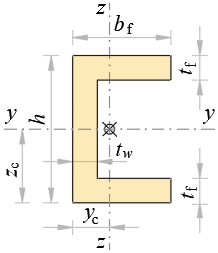
Dimensions
h = 20 m, tw = 1 m
bf = 10 m, tf = 2 m
Area
Aw = h · tw = 20 · 1 = 20 m2
Af = ( bf − tw ) · tf = ( 10 − 1 ) · 2 = 18 m2
A = Aw + 2 · Af = 20 + 2 · 18 = 56 m2
Centroid
Sz = Aw · tw2 + Af · ( bf + tw ) = 20 · 12 + 18 · ( 10 + 1 ) = 208 m3
yc = SzA = 20856 = 3.71 m
zc = h2 = 202 = 10 m
Perimeter
P = 2 · ( h + 2 · bf − tw ) = 2 · ( 20 + 2 · 10 − 1 ) = 78 m
Second moments of area
Iy = bf · h3 − ( bf − tw ) · ( h − 2 · tf ) 312 = 10 · 203 − ( 10 − 1 ) · ( 20 − 2 · 2 ) 312 = 3594.67 m4
Iz_w = ( h − 2 · tf ) · tw · (tw212 + (yc − tw2)2) = ( 20 − 2 · 2 ) · 1 · (1212 + (3.71 − 12)2) = 166.64 m4
Iz_f = tf · bf · (bf212 + (yc − bf2)2) = 2 · 10 · (10212 + (3.71 − 102)2) = 199.73 m4
Iz = Iz_w + 2 · Iz_f = 166.64 + 2 · 199.73 = 566.1 m4
Polar moment of area
Ix = Iy + Iz = 3594.67 + 566.1 = 4160.76 m4
Radii of gyration
ry = IyA = 3594.6756 = 8.01 m
rz = IzA = 566.156 = 3.18 m
rx = IxA = 4160.7656 = 8.62 m
Circle¶
Section properties of a solid circle: area, \(I_x = I_y = \pi d^4 / 64\), section modulus and radius of gyration.
"Geometrical Properties of Circle
'<div style="max-width:120mm"><img style="height:135pt;" alt="circle.png" class="side" src="../../Images/mechanics/sections/circle.png"></div>
'Diameter
d = ?'%u
'Area
A = π*d^2/4'%u<sup>2</sup>
'Centroid
'<p><i>z</i><sub>c</sub> ='y_c = d/2'%u</p>
'Perimeter
P = π*d'%u
'Second moments of area
'<p><i>I</i><sub>z</sub> ='I_y = π*d^4/64'%u<sup>4</sup></p>
'Polar moment of area
I_x = 2*I_y'%u<sup>4</sup>
'Radii of gyration
'<p><i>r</i><sub>z</sub> ='r_y = sqrt(I_y/A)'%u</p>
r_x = sqr(I_x/A)'%u
'Torsional constant
I_t = π*d^4/32'%u<sup>4</sup>
'Torsional section modulus
W_t = 2*I_t/d'%u<sup>3</sup>
1
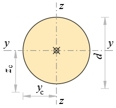
Diameter
d = 1 m
Area
A = π · d24 = 3.14 · 124 = 0.785 m2
Centroid
zc = yc = d2 = 12 = 0.5 m
Perimeter
P = π · d = 3.14 · 1 = 3.14 m
Second moments of area
Iz = Iy = π · d464 = 3.14 · 1464 = 0.0491 m4
Polar moment of area
Ix = 2 · Iy = 2 · 0.0491 = 0.0982 m4
Radii of gyration
rz = ry = IyA = 0.04910.785 = 0.25 m
rx = IxA = 0.09820.785 = 0.354 m
Torsional constant
It = π · d432 = 3.14 · 1432 = 0.0982 m4
Torsional section modulus
Wt = 2 · Itd = 2 · 0.09821 = 0.196 m3
Sector¶
Section properties of a circular sector: area, centroid, second moments of area and radii of gyration as functions of radius and central angle.
"Geometrical Properties of Circular Sector
'<div style="max-width:150mm"><img style="height:120pt;" alt="sector.png" class="side" src="../../Images/mechanics/sections/sector.png"></div>
'Radius -'r = ?'%u
'Angle -'α = ?'°
k = π/180
a = sqr(2*r^2*(1 - cos(α)))'%u
'Area
A = α/2*k*r^2'%u<sup>2</sup>
'Centroid
y_c = a/2'%u
z_c = 4*r*sin(α/2)/(3*α*k)'%u
'Perimeter
P = (α*k + 2)*r'%u
'Second moments of area
I_y = r^4*((α*k + sin(α))/8 - 8*sin(α/2)^2/(9*α*k))'%u<sup>4</sup>
I_z = r^4*(α*k - sin(α))/8'%u<sup>4</sup>
'Polar moment of area
I_x = I_y + I_z'%u<sup>4</sup>
'Radii of gyration
r_y = sqrt(I_y/A)'%u
r_z = sqrt(I_z/A)'%u
r_x = sqrt(I_x/A)'%u
1 90
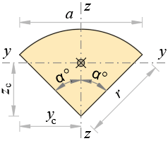
Radius - r = 1 m
Angle - α = 90 °
k = π180 = 3.14180 = 0.0175
a = √ 2 · r2 · ( 1 − cos ( α ) ) = √ 2 · 12 · ( 1 − cos ( 90 ) ) = 1.41 m
Area
A = α2 · k · r2 = 902 · 0.0175 · 12 = 0.785 m2
Centroid
yc = a2 = 1.412 = 0.707 m
zc = 4 · r · sin(α2)3 · α · k = 4 · 1 · sin(902)3 · 90 · 0.0175 = 0.6 m
Perimeter
P = ( α · k + 2 ) · r = ( 90 · 0.0175 + 2 ) · 1 = 3.57 m
Second moments of area
Iy = r4 · (α · k + sin ( α ) 8 − 8 · sin(α2)29 · α · k) = 14 · (90 · 0.0175 + sin ( 90 ) 8 − 8 · sin(902)29 · 90 · 0.0175) = 0.0384 m4
Iz = r4 · ( α · k − sin ( α ) ) 8 = 14 · ( 90 · 0.0175 − sin ( 90 ) ) 8 = 0.0713 m4
Polar moment of area
Ix = Iy + Iz = 0.0384 + 0.0713 = 0.11 m4
Radii of gyration
ry = IyA = 0.03840.785 = 0.221 m
rz = IzA = 0.07130.785 = 0.301 m
rx = IxA = 0.110.785 = 0.374 m
Circlular Pipe¶
Section properties of a circular pipe: area, \(I_x = I_y = \pi (D^4 - d^4)/64\), section modulus and radii of gyration.
"Geometrical Properties of Circular Pipe
'<div style="max-width:150mm"><img style="height:135pt;" alt="circular-pipe.png" class="side" src="../../Images/mechanics/sections/circular-pipe.png"></div>
'Dimensions
d = ?'%u,'t = ?'%u
d_1 = d - 2*t'%u
'Area
A = π*(d^2 - d_1^2)/4'%u<sup>2</sup>
'Centroid
'<p><i>z</i><sub>c</sub> ='y_c = d/2'%u</p>
'Perimeter
P = π*d'%u
'Second moments of area
'<p><i>I</i><sub>z</sub> ='I_y = π*(d^4 - d_1^4)/64'%u<sup>4</sup></p>
'Polar moment of area
I_x = 2*I_y'%u<sup>4</sup>
'Torsional constant
I_t = π*(d^4 - d_1^4)/32'%u<sup>4</sup>
'Torsional section modulus
W_t = 2*I_t/d'%u<sup>3</sup>
'Radii of gyration
'<p><i>r</i><sub>z</sub> ='r_y = sqrt(I_y/A)'%u</p>
r_x = sqr(I_x/A)'%u
1 0.1
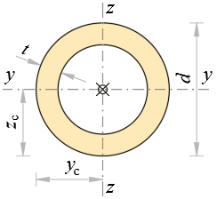
Dimensions
d = 1 m, t = 0.1 m
d1 = d − 2 · t = 1 − 2 · 0.1 = 0.8 m
Area
A = π · ( d2 − d12 ) 4 = 3.14 · ( 12 − 0.82 ) 4 = 0.283 m2
Centroid
zc = yc = d2 = 12 = 0.5 m
Perimeter
P = π · d = 3.14 · 1 = 3.14 m
Second moments of area
Iz = Iy = π · ( d4 − d14 ) 64 = 3.14 · ( 14 − 0.84 ) 64 = 0.029 m4
Polar moment of area
Ix = 2 · Iy = 2 · 0.029 = 0.058 m4
Torsional constant
It = π · ( d4 − d14 ) 32 = 3.14 · ( 14 − 0.84 ) 32 = 0.058 m4
Torsional section modulus
Wt = 2 · Itd = 2 · 0.0581 = 0.116 m3
Radii of gyration
rz = ry = IyA = 0.0290.283 = 0.32 m
rx = IxA = 0.0580.283 = 0.453 m
Ellipse¶
Section properties of a solid ellipse: area, \(I_x = \tfrac{\pi}{4} a b^3\), \(I_y = \tfrac{\pi}{4} a^3 b\), section moduli and radii of gyration.
"Geometrical Properties of Ellipse
'<div style="max-width:120mm"><img style="height:112pt;" alt="ellipse.png" class="side" src="../../Images/mechanics/sections/ellipse.png"></div>
'Dimensions
a=?'%u,'b=?'%u
'Area
A = π*a*b'%u<sup>2</sup>
'Centroid
y_c = a'%u,'z_c = b'%u
'Perimeter (approx.)
P = π*(3*(a+b)-sqr((3*a+b)*(a+3*b)))'%u
'Second moments of area
I_y = π*a*b^3/4'%u<sup>4</sup>
I_z = π*b*a^3/4'%u<sup>4</sup>
'Polar moment of area
I_x = I_y + I_z'%u<sup>4</sup>
'Torsional constant
I_t = π*a^3*b^3/(a^2 + b^2)'%u<sup>4</sup>
'Torsional section modulus
#if '<!--'b < a'-->
a'>'b
W_t = π*a*b^2/2'%u<sup>3</sup>
#else
a'<'b
W_t = π*b*a^2/2'%u<sup>3</sup>
#end if
'Radii of gyration
r_y = sqrt(I_y/A)'%u
r_z = sqrt(I_z/A)'%u
r_x = sqrt(I_x/A)'%u
2 1
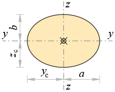
Dimensions
a = 2 m, b = 1 m
Area
A = π · a · b = 3.14 · 2 · 1 = 6.28 m2
Centroid
yc = a = 2 m, zc = b = 1 m
Perimeter (approx.)
P = π · ( 3 · ( a + b ) − √ ( 3 · a + b ) · ( a + 3 · b ) ) = 3.14 · ( 3 · ( 2 + 1 ) − √ ( 3 · 2 + 1 ) · ( 2 + 3 · 1 ) ) = 9.69 m
Second moments of area
Iy = π · a · b34 = 3.14 · 2 · 134 = 1.57 m4
Iz = π · b · a34 = 3.14 · 1 · 234 = 6.28 m4
Polar moment of area
Ix = Iy + Iz = 1.57 + 6.28 = 7.85 m4
Torsional constant
It = π · a3 · b3a2 + b2 = 3.14 · 23 · 1322 + 12 = 5.03 m4
Torsional section modulus
a = 2 > b = 1
Wt = π · a · b22 = 3.14 · 2 · 122 = 3.14 m3
Radii of gyration
ry = IyA = 1.576.28 = 0.5 m
rz = IzA = 6.286.28 = 1 m
rx = IxA = 7.856.28 = 1.12 m
Elliptical Pipe¶
Section properties of a hollow elliptical pipe: area, \(I_x\), \(I_y\), section moduli and radii of gyration from the four semi-axes.
"Geometrical Properties of Elliptical Pipe
'<div style="max-width:120mm"><img style="height:112pt;" alt="elliptical-pipe.png" class="side" src="../../Images/mechanics/sections/elliptical-pipe.png"></div>
'(ellipse with elliptical hole)
'Dimensions
a = ?'%u,'b = ?'%u
t = ?'%u
a_1 = a - t'%u
b_1 = b - t'%u
'Area
A = π*(a*b - a_1*b_1)'%u<sup>2</sup>
'Centroid
y_c = a'%u,'z_c = b'%u
'Perimeter (approx.)
P = π*(3*(a + b) - sqr((3*a + b)*(a + 3*b)))'%u
'Second moments of area
I_y = π/4*(a*b^3 - a_1*b_1^3)'%u<sup>4</sup>
I_z = π/4*(b*a^3 - b_1*a_1^3)'%u<sup>4</sup>
'Polar moment of area
I_x = I_y + I_z'%u<sup>4</sup>
'Torsional constant
#if '<!--'b < a'-->
k = b_1/b
#else
k = a_1/a
#end if
I_t = π*a^3*b^3/(a^2 + b^2)*(1 - k^4)'%u<sup>4</sup>
'Torsional section modulus
#if '<!--'b < a'-->
W_t = π*a*b^2/2*(1 - k^4)'%u<sup>3</sup>
#else
W_t = π*b*a^2/2*(1 - k^4)'%u<sup>3</sup>
#end if
'Radii of gyration
r_y = sqrt(I_y/A)'%u
r_z = sqrt(I_z/A)'%u
r_x = sqrt(I_x/A)'%u
20 10 2
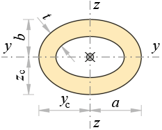
(ellipse with elliptical hole)
Dimensions
a = 20 m, b = 10 m
t = 2 m
a1 = a − t = 20 − 2 = 18 m
b1 = b − t = 10 − 2 = 8 m
Area
A = π · ( a · b − a1 · b1 ) = 3.14 · ( 20 · 10 − 18 · 8 ) = 175.93 m2
Centroid
yc = a = 20 m, zc = b = 10 m
Perimeter (approx.)
P = π · ( 3 · ( a + b ) − √ ( 3 · a + b ) · ( a + 3 · b ) ) = 3.14 · ( 3 · ( 20 + 10 ) − √ ( 3 · 20 + 10 ) · ( 20 + 3 · 10 ) ) = 96.88 m
Second moments of area
Iy = π4 · ( a · b3 − a1 · b13 ) = 3.144 · ( 20 · 103 − 18 · 83 ) = 8469.73 m4
Iz = π4 · ( b · a3 − b1 · a13 ) = 3.144 · ( 10 · 203 − 8 · 183 ) = 26188.3 m4
Polar moment of area
Ix = Iy + Iz = 8469.73 + 26188.3 = 34658.1 m4
Torsional constant
k = b1b = 810 = 0.8
It = π · a3 · b3a2 + b2 · ( 1 − k4 ) = 3.14 · 203 · 103202 + 102 · ( 1 − 0.84 ) = 29676.7 m4
Torsional section modulus
Wt = π · a · b22 · ( 1 − k4 ) = 3.14 · 20 · 1022 · ( 1 − 0.84 ) = 1854.8 m3
Radii of gyration
ry = IyA = 8469.73175.93 = 6.94 m
rz = IzA = 26188.3175.93 = 12.2 m
rx = IxA = 34658.1175.93 = 14.04 m
Equilateral Triangle¶
Section properties of an equilateral triangle: area, centroid, \(I_x\), \(I_y\), section moduli and radii of gyration in closed form.
"Geometrical Properties of Equilateral Triangle
'<div style="max-width:120mm"><img style="height:135pt;" alt="equilateral-triangle.png" class="side" src="../../Images/mechanics/sections/equilateral-triangle.png"></div>
'Side length
a = ?'%u
'Height
h = sqr(3)/2*a'%u
'Area
A = a*h/2'%u<sup>2</sup>
'Perimeter
P = 3*a'%u
'Centroid
y_c = a/2'%u
z_c = h/3'%u
'Second moments of area
I_y = a*h^3/36'%u<sup>4</sup>
I_z = a^3*h/48'%u<sup>4</sup>
'Polar moment of area
I_x = I_y+I_z'%u<sup>4</sup>
'Torsional constant
I_t = a^4*sqr(3)/80'%u<sup>4</sup>
'Torsional section modulus
W_t = a^3/20'%u<sup>3</sup>
'Radii of gyration
r_y = sqrt(I_y/A)'%u
r_z = sqrt(I_z/A)'%u
r_x = sqrt(I_x/A)'%u
1
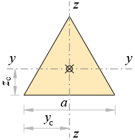
Side length
a = 1 m
Height
h = √ 32 · a = √ 32 · 1 = 0.866 m
Area
A = a · h2 = 1 · 0.8662 = 0.433 m2
Perimeter
P = 3 · a = 3 · 1 = 3 m
Centroid
yc = a2 = 12 = 0.5 m
zc = h3 = 0.8663 = 0.289 m
Second moments of area
Iy = a · h336 = 1 · 0.866336 = 0.018 m4
Iz = a3 · h48 = 13 · 0.86648 = 0.018 m4
Polar moment of area
Ix = Iy + Iz = 0.018 + 0.018 = 0.0361 m4
Torsional constant
It = a4 · √ 380 = 14 · √ 380 = 0.0217 m4
Torsional section modulus
Wt = a320 = 1320 = 0.05 m3
Radii of gyration
ry = IyA = 0.0180.433 = 0.204 m
rz = IzA = 0.0180.433 = 0.204 m
rx = IxA = 0.03610.433 = 0.289 m
Half Circle¶
Section properties of a half circle: area, centroid offset, second moments of area and radii of gyration.
"Geometrical Properties of Half Circle
'<div style="max-width:120mm"><img style="height:112pt;" alt="half-circle.png" class="side" src="../../Images/mechanics/sections/half-circle.png"></div>
'Diameter
d = ?'%u
'Area
A = π*d^2/8'%u<sup>2</sup>
'Perimeter
P = π*d/2 + d'%u
'Centroid
y_c = d/2'%u
z_c = 2*d/(3*π)'%u
'Second moments of area
I_y = (π/128 - 1/(18*π))*d^4'%u<sup>4</sup>
I_z = π*d^4/128'%u<sup>4</sup>
'Polar moment of area
I_x = I_y + I_z'%u<sup>4</sup>
'Radii of gyration
r_y = sqrt(I_y/A)'%u
r_z = sqrt(I_z/A)'%u
r_x = sqrt(I_x/A)'%u
1
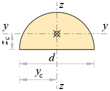
Diameter
d = 1 m
Area
A = π · d28 = 3.14 · 128 = 0.393 m2
Perimeter
P = π · d2 + d = 3.14 · 12 + 1 = 2.57 m
Centroid
yc = d2 = 12 = 0.5 m
zc = 2 · d3 · π = 2 · 13 · 3.14 = 0.212 m
Second moments of area
Iy = (π128 − 118 · π) · d4 = (3.14128 − 118 · 3.14) · 14 = 0.00686 m4
Iz = π · d4128 = 3.14 · 14128 = 0.0245 m4
Polar moment of area
Ix = Iy + Iz = 0.00686 + 0.0245 = 0.0314 m4
Radii of gyration
ry = IyA = 0.006860.393 = 0.132 m
rz = IzA = 0.02450.393 = 0.25 m
rx = IxA = 0.03140.393 = 0.283 m
Hexagon¶
Section properties of a regular hexagon: area, \(I_x = I_y\), section moduli and radii of gyration in closed form.
"Geometrical Properties of Regular Hexagon
'<div style="max-width:120mm"><img style="height:135pt;" alt="hexagon.png" class="side" src="../../Images/mechanics/sections/hexagon.png"></div>
'Dimensions
a = ?'%u
h = sqr(3)*a'%u
'Area
A = 1.5*a*h'%u<sup>2</sup>
'Centroid
y_c = a'%u
z_c = h/2'%u
'Perimeter
P = 6*a'%u
'Second moments of area
'<p><i>I</i><sub>z</sub> ='I_y = 5*sqr(3)*a^4/16'%u<sup>4</sup></p>
'Polar moment of area
I_x=2*I_y'%u<sup>4</sup>
'Radii of gyration
'<p><i>r</i><sub>z</sub> ='r_y = sqrt(I_y/A)'%u</p>
r_x = sqrt(I_x/A)'%u
1
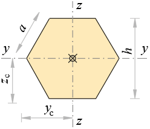
Dimensions
a = 1 m
h = √ 3 · a = √ 3 · 1 = 1.73 m
Area
A = 1.5 · a · h = 1.5 · 1 · 1.73 = 2.6 m2
Centroid
yc = a = 1 m
zc = h2 = 1.732 = 0.866 m
Perimeter
P = 6 · a = 6 · 1 = 6 m
Second moments of area
Iz = Iy = 5 · √ 3 · a416 = 5 · √ 3 · 1416 = 0.541 m4
Polar moment of area
Ix = 2 · Iy = 2 · 0.541 = 1.08 m4
Radii of gyration
rz = ry = IyA = 0.5412.6 = 0.456 m
rx = IxA = 1.082.6 = 0.645 m
Quarter Circle¶
Section properties of a quarter circle: area, centroid offsets, second moments of area and radii of gyration.
"Geometrical Properties of Quarter Circle
'<div style="max-width:120mm"><img style="height:120pt;" alt="quarter-circle.png" class="side" src="../../Images/mechanics/sections/quarter-circle.png"></div>
'Radius -'r = ?'%u
'Area
A = π*r^2/4'%u<sup>2</sup>
'Centroid
'<p><i>z</i><sub>c</sub> ='y_c = 4*r/(3*π)'%u</p>
'Perimeter
P = (π/2+2)*r'%u
'Second moments of area
'<p><i>I</i><sub>z</sub> ='I_y = (π/16 - 4/(9*π))*r^4'%u<sup>4</sup></p>
I_yz = (1/8 - 4/(9*π))*r^4'%u<sup>4</sup></p>
'Principal area moments
I_1 = I_y + abs(I_yz)'%u<sup>4</sup>
I_2 = I_y - abs(I_yz)'%u<sup>4</sup>
'Angle of principal axis
α_1 = atan((I_y - I_1)/I_yz)'<sup>о</sup>
'Polar moment of area
I_x = 2*I_y'%u<sup>4</sup>
'Radii of gyration
'<p><i>r</i><sub>z</sub> ='r_y = sqr(I_y/A)'%u</p>
r_1 = sqr(I_1/A)'%u
r_2 = sqr(I_2/A)'%u
r_x = sqr(I_x/A)'%u
1
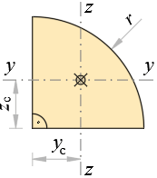
Radius - r = 1 m
Area
A = π · r24 = 3.14 · 124 = 0.785 m2
Centroid
zc = yc = 4 · r3 · π = 4 · 13 · 3.14 = 0.424 m
Perimeter
P = (π2 + 2) · r = (3.142 + 2) · 1 = 3.57 m
Second moments of area
Iz = Iy = (π16 − 49 · π) · r4 = (3.1416 − 49 · 3.14) · 14 = 0.0549 m4
Iyz = (18 − 49 · π) · r4 = (18 − 49 · 3.14) · 14 = -0.0165 m4
Principal area moments
I1 = Iy + | Iyz | = 0.0549 + | -0.0165 | = 0.0713 m4
I2 = Iy − | Iyz | = 0.0549 − | -0.0165 | = 0.0384 m4
Angle of principal axis
α1 = atan(Iy − I1Iyz) = atan(0.0549 − 0.0713-0.0165) = 45 о
Polar moment of area
Ix = 2 · Iy = 2 · 0.0549 = 0.11 m4
Radii of gyration
rz = ry = IyA = 0.05490.785 = 0.264 m
r1 = I1A = 0.07130.785 = 0.301 m
r2 = I2A = 0.03840.785 = 0.221 m
rx = IxA = 0.110.785 = 0.374 m
Rectangle¶
Section properties of a rectangle: area, \(I_x = b h^3 / 12\), \(I_y = h b^3 / 12\), section moduli and radii of gyration.
"Geometrical Properties of Rectangle
'<div style = "max-width:120mm"><img style="height:150pt;" alt="rectangle.png" class="side" src="../../Images/mechanics/sections/rectangle.png"></div>
'Dimensions
h = ?'%u,'b = ?'%u
'Area
A = h*b'%u<sup>2</sup>
'Centroid
y_c = b/2'%u
z_c = h/2'%u
'Perimeter
P = 2*(h + b)'%u
'Second moments of area
I_y = b*h^3/12'%u<sup>4</sup>
I_z = b^3*h/12'%u<sup>4</sup>
'Polar moment of area
I_x = I_y + I_z'%u<sup>4</sup>
'Radii of gyration
r_y = sqrt(I_y/A)'%u
r_z = sqrt(I_z/A)'%u
r_x = sqrt(I_x/A)'%u
#if '<!--'h ≡ b'-->'
'Torsional constant
I_t = 0.1406*h^4'%u<sup>4</sup>
'Torsional section modulus
W_t = 0.2080*h^3'%u<sup>3</sup>
#else
#if '<!--'h > b'-->'
'Torsional constant
I_t = h*b^3*(1 - 0.630*b/h + 0.052*(b/h)^5)/3'%u<sup>4</sup>
'Torsional section modulus
W_t = h*b^2*(1 - 0.630*b/h + 0.250*(b/h)^2)/3'%u<sup>3</sup>
#else
'Torsional constant
I_t = b*h^3*(1 - 0.630*h/b + 0.052*(h/b)^5)/3'%u<sup>4</sup>
'Torsional section modulus
W_t = b*h^2*(1 - 0.630*h/b + 0.250*(h/b)^2)/3'%u<sup>3</sup>
#end if
#end if
2 1
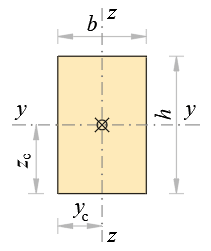
Dimensions
h = 2 m, b = 1 m
Area
A = h · b = 2 · 1 = 2 m2
Centroid
yc = b2 = 12 = 0.5 m
zc = h2 = 22 = 1 m
Perimeter
P = 2 · ( h + b ) = 2 · ( 2 + 1 ) = 6 m
Second moments of area
Iy = b · h312 = 1 · 2312 = 0.667 m4
Iz = b3 · h12 = 13 · 212 = 0.167 m4
Polar moment of area
Ix = Iy + Iz = 0.667 + 0.167 = 0.833 m4
Radii of gyration
ry = IyA = 0.6672 = 0.577 m
rz = IzA = 0.1672 = 0.289 m
rx = IxA = 0.8332 = 0.645 m
Torsional constant
It = h · b3 · (1 − 0.63 · bh + 0.052 · (bh)5)3 = 2 · 13 · (1 − 0.63 · 12 + 0.052 · (12)5)3 = 0.458 m4
Torsional section modulus
Wt = h · b2 · (1 − 0.63 · bh + 0.25 · (bh)2)3 = 2 · 12 · (1 − 0.63 · 12 + 0.25 · (12)2)3 = 0.498 m3
Rectangular Tube¶
Section properties of a rectangular hollow section (RHS): area, \(I_x\), \(I_y\), section moduli and radii of gyration from outer and inner dimensions.
"Geometrical Properties of Rectangular Tube
'<div style="max-width:150mm"><img style="height:150pt;" alt="rectangular-tube.png" class="side" src="../../Images/mechanics/sections/rectangular-tube.png"></div>
'Dimensions
h = ?'%u,'t_w = ?'%u
b = ?'%u,'t_f = ?'%u
b_1 = b - 2*t_w'%u
h_1 = h - 2*t_f'%u
'Area
A = 2*(h*t_w + b_1*t_f)'%u<sup>2</sup>
A = h*b - h_1*b_1'%u<sup>2</sup>
'Centroid
y_c = b/2'%u
z_c = h/2'%u
'Perimeter
P = 2*(h + b)'%u
'Second moments of area
I_y = (b*h^3 - b_1*h_1^3)/12'%u<sup>4</sup>
I_z = (b^3*h - b_1^3*h_1)/12'%u<sup>4</sup>
'Polar moment of area
I_x = I_y + I_z'%u<sup>4</sup>
'Radii of gyration
r_y = sqrt(I_y/A)'%u
r_z = sqrt(I_z/A)'%u
r_x = sqrt(I_x/A)'%u
300 20 200 30
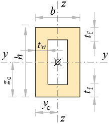
Dimensions
h = 300 m, tw = 20 m
b = 200 m, tf = 30 m
b1 = b − 2 · tw = 200 − 2 · 20 = 160 m
h1 = h − 2 · tf = 300 − 2 · 30 = 240 m
Area
A = 2 · ( h · tw + b1 · tf ) = 2 · ( 300 · 20 + 160 · 30 ) = 21600 m2
A = h · b − h1 · b1 = 300 · 200 − 240 · 160 = 21600 m2
Centroid
yc = b2 = 2002 = 100 m
zc = h2 = 3002 = 150 m
Perimeter
P = 2 · ( h + b ) = 2 · ( 300 + 200 ) = 1000 m
Second moments of area
Iy = b · h3 − b1 · h1312 = 200 · 3003 − 160 · 240312 = 265680000 m4
Iz = b3 · h − b13 · h112 = 2003 · 300 − 1603 · 24012 = 118080000 m4
Polar moment of area
Ix = Iy + Iz = 265680000 + 118080000 = 383760000 m4
Radii of gyration
ry = IyA = 26568000021600 = 110.91 m
rz = IzA = 11808000021600 = 73.94 m
rx = IxA = 38376000021600 = 133.29 m
Rhombus¶
Section properties of a rhombus from its two diagonals: area, \(I_x\), \(I_y\), section moduli and radii of gyration.
"Geometrical Properties of Rhombus
'<div style="max-width:130mm"><img style="height:135pt;" alt="rombus.png" class="side" src="../../Images/mechanics/sections/rhombus.png"></div>
'Diagonals length
b = ? {1.414}'%u , 'd = ? {1.414}'%u
'Side length
a = sqrt(b^2 + d^2)/2'%u
'Area
A = b*d/2' m<sup>2</sup>
'Centroid
y_c = b/2' m
z_c = d/2' m
'Perimeter
P = 4*a'%u
'Second moments of area
I_y = b*d^3/48' m<sup>4</sup>
I_z = d*b^3/48' m<sup>4</sup>
'Polar moment of area
I_x = I_y + I_z' m<sup>4</sup>
'Radii of gyration
r_y = sqrt(I_y/A)' m
r_z = sqrt(I_z/A)' m
r_x = sqrt(I_x/A)' m
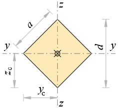
Diagonals length
b = 1.414 m , d = 1.414 m
Side length
a = √ b2 + d22 = √ 1.412 + 1.4122 = 1 m
Area
A = b · d2 = 1.41 · 1.412 = 1 m2
Centroid
yc = b2 = 1.412 = 0.707 m
zc = d2 = 1.412 = 0.707 m
Perimeter
P = 4 · a = 4 · 1 = 4 m
Second moments of area
Iy = b · d348 = 1.41 · 1.41348 = 0.0833 m4
Iz = d · b348 = 1.41 · 1.41348 = 0.0833 m4
Polar moment of area
Ix = Iy + Iz = 0.0833 + 0.0833 = 0.167 m4
Radii of gyration
ry = IyA = 0.08331 = 0.289 m
rz = IzA = 0.08331 = 0.289 m
rx = IxA = 0.1671 = 0.408 m
Rhombus (Square)¶
Section properties of a square rhombus (rotated square): area, \(I_x = I_y\), section moduli and radii of gyration.
"Geometrical Properties of Square Rhombus
'<div style="max-width:120mm"><img style="height:135pt;" alt="rombus-square.png" class="side" src="../../Images/mechanics/sections/rhombus.png"></div>
'Side length
a = ?'%u
'Diagonal length
d = sqr(2*a^2)'%u
'Area
A = a^2'%u<sup>2</sup>
'Centroid
'<p><i>z</i><sub>c</sub> ='y_c = d/2'</p>
'Perimeter
P = 4*a'%u
'Second moments of area
'<p><i>I</i><sub>z</sub> ='I_y = d^4/48'%u<sup>4</sup></p>
'Polar moment of area
I_x = 2*I_y'%u<sup>4</sup>
'Radii of gyration
'<p><i>r</i><sub>z</sub> ='r_y = sqrt(I_y/A)'</p>
r_x = sqr(I_x/A)'%u
1
Side length
a = 1 m
Diagonal length
d = √ 2 · a2 = √ 2 · 12 = 1.41 m
Area
A = a2 = 12 = 1 m2
Centroid
zc = yc = d2 = 1.412 = 0.707
Perimeter
P = 4 · a = 4 · 1 = 4 m
Second moments of area
Iz = Iy = d448 = 1.41448 = 0.0833 m4
Polar moment of area
Ix = 2 · Iy = 2 · 0.0833 = 0.167 m4
Radii of gyration
rz = ry = IyA = 0.08331 = 0.289
rx = IxA = 0.1671 = 0.408 m
Right Triangle¶
Section properties of a right triangle: area, centroid offsets, \(I_x\), \(I_y\), section moduli and radii of gyration in closed form.
"Geometrical Properties of Right Triangle
'<div style="max-width:120mm"><img style="height:127pt;" alt="right-triangle.png" class="side" src="../../Images/mechanics/sections/right-triangle.png"></div>
'Side lengths
a = ?'%u,'b = ?'%u
'Area
A = a*b/2'%u<sup>2</sup>
'Perimeter
P = a + b + sqr(a^2 + b^2)'%u<sup>2</sup>
'Centroid
y_c = a/3'%u
z_c = b/3'%u
'Second moments of area
I_y = a*b^3/36'%u<sup>4</sup>
I_z = a^3*b/36'%u<sup>4</sup>
I_yz = -(a^2*b^2)/72'%u<sup>4</sup></p>
'Principal area moments
I_1 = (I_y + I_z)/2 + sqrt((I_y - I_z)^2/4 + I_yz^2)'%u<sup>4</sup>
I_2 = (I_y + I_z)/2 - sqrt((I_y - I_z)^2/4 + I_yz^2)'%u<sup>4</sup>
'Angle of principal axis
α_1 = atan((I_y - I_1)/I_yz)'<sup>о</sup>
'Polar moment of area
I_x = I_y + I_z
'Radii of gyration
r_y = sqrt(I_y/A)'%u
r_z = sqrt(I_z/A)'%u
r_1 = sqr(I_1/A)'%u
r_2 = sqr(I_2/A)'%u
r_x = sqrt(I_x/A)'%u
2 1
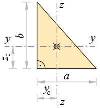
Side lengths
a = 2 m, b = 1 m
Area
A = a · b2 = 2 · 12 = 1 m2
Perimeter
P = a + b + √ a2 + b2 = 2 + 1 + √ 22 + 12 = 5.24 m2
Centroid
yc = a3 = 23 = 0.667 m
zc = b3 = 13 = 0.333 m
Second moments of area
Iy = a · b336 = 2 · 1336 = 0.0556 m4
Iz = a3 · b36 = 23 · 136 = 0.222 m4
Iyz = - ( a2 · b2 ) 72 = - ( 22 · 12 ) 72 = -0.0556 m4
Principal area moments
I1 = Iy + Iz2 + ( Iy − Iz ) 24 + Iyz2 = 0.0556 + 0.2222 + ( 0.0556 − 0.222 ) 24 + ( -0.0556 ) 2 = 0.239 m4
I2 = Iy + Iz2 − ( Iy − Iz ) 24 + Iyz2 = 0.0556 + 0.2222 − ( 0.0556 − 0.222 ) 24 + ( -0.0556 ) 2 = 0.0387 m4
Angle of principal axis
α1 = atan(Iy − I1Iyz) = atan(0.0556 − 0.239-0.0556) = 73.15 о
Polar moment of area
Ix = Iy + Iz = 0.0556 + 0.222 = 0.278
Radii of gyration
ry = IyA = 0.05561 = 0.236 m
rz = IzA = 0.2221 = 0.471 m
r1 = I1A = 0.2391 = 0.489 m
r2 = I2A = 0.03871 = 0.197 m
rx = IxA = 0.2781 = 0.527 m
Segment¶
Section properties of a circular segment: area, centroid, second moments of area and radii of gyration from radius and central angle.
"Geometrical Properties of Circular Segment
'<div style="max-width:150mm"><img style="height:120pt;" alt="segment.png" class="side" src="../../Images/mechanics/sections/segment.png"></div>
'Radius -'r = ?'%u
'Angle -'α = ?'°
k = π/180
a = sqr(2*r^2*(1 - cos(α)))'%u
h = sqr(r^2 - a^2/4)'%u
'Area
A = r^2/2*(α*k - sin(α))'%u<sup>2</sup>
'Centroid
y_c = a/2'%u
z_c = 4*r/3*(sin(α/2)^3/(α*k - sin(α))) - h'%u
'Perimeter
P = α*k*r + a'%u
'Second moments of area
I_y = r^4/8*(α*k - sin(α) + 2*sin(α)*sin(α/2)^2) - (h + z_c)^2*A'%u<sup>4</sup>
I_z = r^4/24*(3*α*k - 3*sin(α) - 2*sin(α)*sin(α/2)^2)'%u<sup>4</sup>
'Polar moment of area
I_x = I_y + I_z'%u<sup>4</sup>
'Radii of gyration
r_y = sqrt(I_y/A)'%u
r_z = sqrt(I_z/A)'%u
r_x = sqrt(I_x/A)'%u
1 90
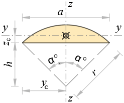
Radius - r = 1 m
Angle - α = 90 °
k = π180 = 3.14180 = 0.0175
a = √ 2 · r2 · ( 1 − cos ( α ) ) = √ 2 · 12 · ( 1 − cos ( 90 ) ) = 1.41 m
h = r2 − a24 = 12 − 1.4124 = 0.707 m
Area
A = r22 · ( α · k − sin ( α ) ) = 122 · ( 90 · 0.0175 − sin ( 90 ) ) = 0.285 m2
Centroid
yc = a2 = 1.412 = 0.707 m
zc = 4 · r3 · sin(α2)3α · k − sin ( α ) − h = 4 · 13 · sin(902)390 · 0.0175 − sin ( 90 ) − 0.707 = 0.119 m
Perimeter
P = α · k · r + a = 90 · 0.0175 · 1 + 1.41 = 2.99 m
Second moments of area
Iy = r48 · (α · k − sin ( α ) + 2 · sin ( α ) · sin(α2)2) − ( h + zc ) 2 · A = 148 · (90 · 0.0175 − sin ( 90 ) + 2 · sin ( 90 ) · sin(902)2) − ( 0.707 + 0.119 ) 2 · 0.285 = 0.00169 m4
Iz = r424 · (3 · α · k − 3 · sin ( α ) − 2 · sin ( α ) · sin(α2)2) = 1424 · (3 · 90 · 0.0175 − 3 · sin ( 90 ) − 2 · sin ( 90 ) · sin(902)2) = 0.0297 m4
Polar moment of area
Ix = Iy + Iz = 0.00169 + 0.0297 = 0.0314 m4
Radii of gyration
ry = IyA = 0.001690.285 = 0.0769 m
rz = IzA = 0.02970.285 = 0.322 m
rx = IxA = 0.03140.285 = 0.332 m
Square¶
Section properties of a square: area \(A = a^2\), \(I_x = I_y = a^4/12\), section modulus and radius of gyration.
"Geometrical Properties of Square
'<div style="max-width:100mm"><img style="height:135pt;" alt="square.png" class="side" src="../../Images/mechanics/sections/square.png"></div>
'Side length
a= ?'%u
'Area
A = a^2'%u<sup>2</sup>
'Centroid
'<p><i>z</i><sub>c</sub> ='y_c = a/2'%u</p>
'Perimeter
P = 4*a'%u
'Second moments of area
'<p><i>I</i><sub>z</sub> ='I_y = a^4/12'%u<sup>4</sup></p>
'Polar moment of area
I_x=2*I_y'%u<sup>4</sup>
'Radii of gyration
'<p><i>r</i><sub>z</sub> ='r_y = sqrt(I_y/A)'%u</p>
r_x = sqr(I_x/A)'%u
1
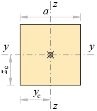
Side length
a = 1 m
Area
A = a2 = 12 = 1 m2
Centroid
zc = yc = a2 = 12 = 0.5 m
Perimeter
P = 4 · a = 4 · 1 = 4 m
Second moments of area
Iz = Iy = a412 = 1412 = 0.0833 m4
Polar moment of area
Ix = 2 · Iy = 2 · 0.0833 = 0.167 m4
Radii of gyration
rz = ry = IyA = 0.08331 = 0.289 m
rx = IxA = 0.1671 = 0.408 m
Trapezoid¶
Section properties of a trapezoid: area, centroid offsets, \(I_x\), \(I_y\), section moduli and radii of gyration from the two parallel sides and height.
"Geometrical Properties of Trapezoid
'<div style="max-width:130mm"><img style="height:135pt;" alt="Trapezoid.png" class="side" src="../../Images/mechanics/sections/trapezoid.png"></div>
'Dimensions
a = ?'%u,'b = ?'%u
'Height
h = ?'%u
'Area
A = h*(a + b)/2'%u<sup>2</sup>
'Centroid
y_c = a/2'%u
z_c = h*((a + 2*b)/(a + b))/3'%u
'Perimeter
P = a + b + 2*sqr(h^2 + (b - a)^2/4)'%u
'Second moments of area
I_y = h^3*((a^2 + 4*a*b + b^2)/(a + b))/36'%u<sup>4</sup>
I_z = h*(a + b)*(a^2 + b^2)/48'%u<sup>4</sup>
'Polar moment of area
I_x = I_y + I_z'%u<sup>4</sup>
'Radii of gyration
r_y = sqrt(I_y/A)'%u
r_z = sqrt(I_z/A)'%u
r_x = sqrt(I_x/A)'%u
2 1 1
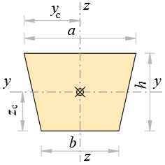
Dimensions
a = 2 m, b = 1 m
Height
h = 1 m
Area
A = h · ( a + b ) 2 = 1 · ( 2 + 1 ) 2 = 1.5 m2
Centroid
yc = a2 = 22 = 1 m
zc = h · a + 2 · ba + b3 = 1 · 2 + 2 · 12 + 13 = 0.444 m
Perimeter
P = a + b + 2 · h2 + ( b − a ) 24 = 2 + 1 + 2 · 12 + ( 1 − 2 ) 24 = 5.24 m
Second moments of area
Iy = h3 · a2 + 4 · a · b + b2a + b36 = 13 · 22 + 4 · 2 · 1 + 122 + 136 = 0.12 m4
Iz = h · ( a + b ) · ( a2 + b2 ) 48 = 1 · ( 2 + 1 ) · ( 22 + 12 ) 48 = 0.312 m4
Polar moment of area
Ix = Iy + Iz = 0.12 + 0.312 = 0.433 m4
Radii of gyration
ry = IyA = 0.121.5 = 0.283 m
rz = IzA = 0.3121.5 = 0.456 m
rx = IxA = 0.4331.5 = 0.537 m
Spotted an error? Edit these examples.